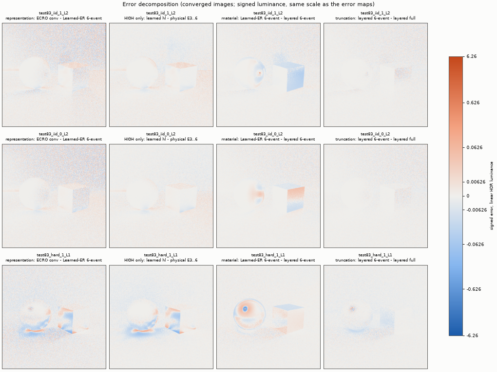
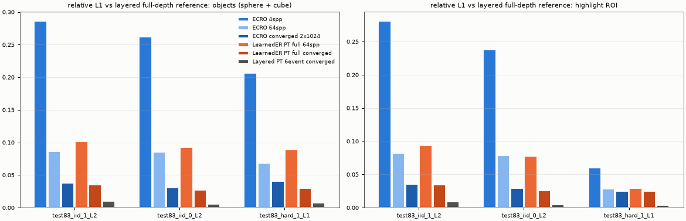
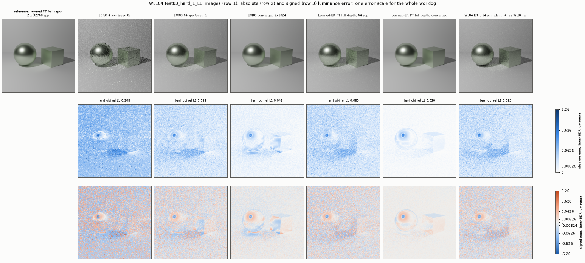
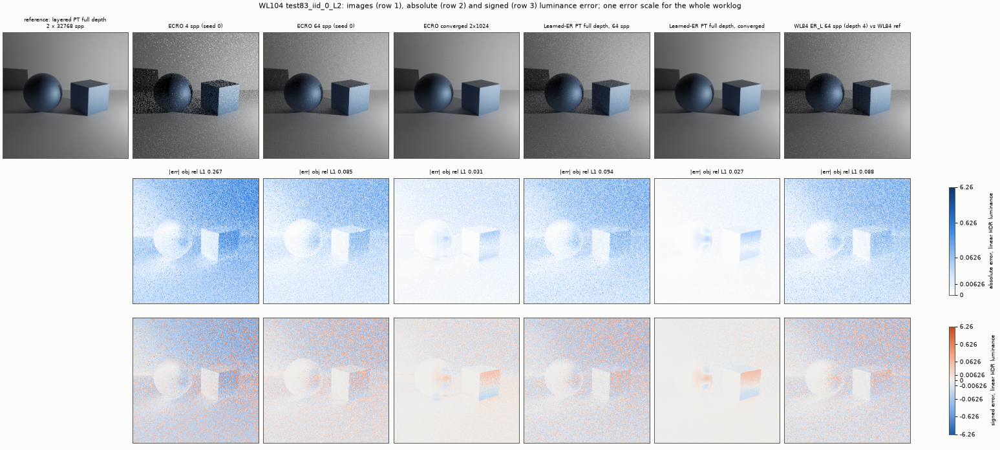
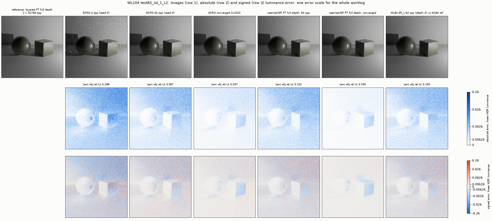
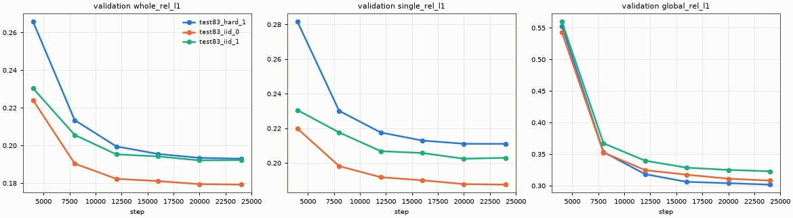

WL104 — ECRO trained and rendered on the WL84 scene (learned-ER LOW, D = 6)
One error scale for every map: max 6.256 linear-HDR luminance, logarithmic display with floor M/1000. Numbers: metrics.json.
decomposition_maps.png

error_bars.png

error_maps_test83_hard_1_L1.png

error_maps_test83_iid_0_L2.png

error_maps_test83_iid_1_L2.png

training_validation.png
